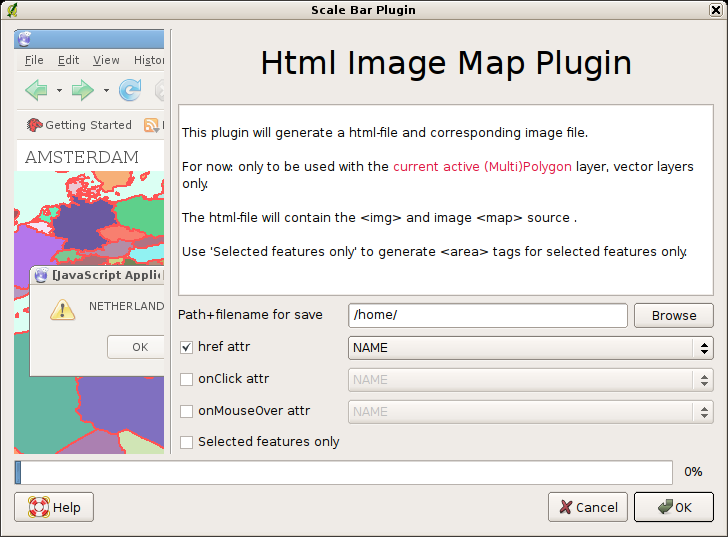
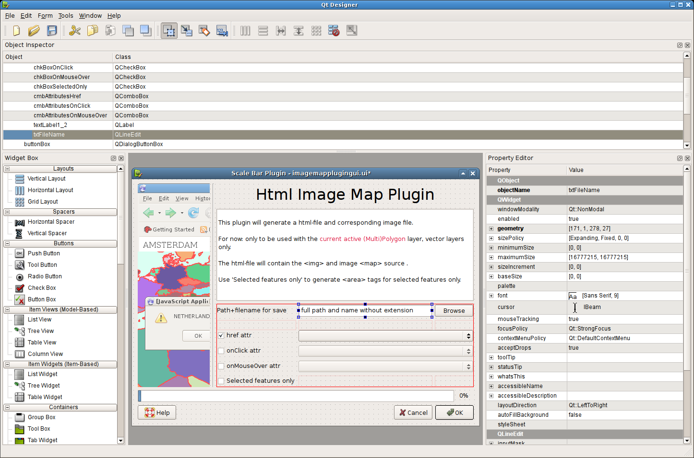

My first Python Qgis Plugin
Introduction
I needed to make an html image map once for a small project. Because I was using arcview 3.1 at that time,
I found a nice repository 1 with all kind of scripts, and also one (Avenue) script to do exactly what I wanted:
take the current map view, generate an image of it, and write an html-file with an image and
map-area tags in it 2.
Nowadays I'm using Qgis 3 ;-) . With QGis you can view your spatial data from Esri shapefile, miff files,
Postgis/Postgresql databases and even WMS (WebMappingSources) from around the internet.
One very nice feature is that from version 9.0 of Qgis on there will be an Python interface available.
Not only to manupulate the map via a console, but also to make small custom map applications using Python and Qgis. {see link}.
One nice feature of the 9.0 version is the ability to build your own plugins IN PYTHON.
So to make a long story short: I wrote my first QGis plugin, thereby not only polishing up my (rather thin) Python knowledge,
but als learned how this Qt4 widget stuff is working, and what resource files are. I will try to write my ramblings down so
everybody with a little spatial and python knowledge can start hacking plugins!
I do not pretend to know the best way to write a plugin, but hope this plugin is usefull to somebody, or makes somebody enthousiast enough to start off him/herself
Versions
- 0.5.0 (09-2010): implemented setting mapcanvas/images size (thanks Luuk Schaminee for idea)
- 0.4.4 (05-2010): bugfix for on the fly projected projects (thanks Ivan Mincik)
- 0.4.4 (05-2010): bugfix for on the fly projected projects (thanks Ivan Mincik)
- 0.4.3 (05-2010): bugfix progressbar.setProperty issue in debian (thanks Ivan Mincik)
- 0.4.2 (05-2010): bugfix for 'version'-exception
- 0.4.1 (05-2010): fix for #1753 remove qt3 stuff
- 0.4.0 (04-2010): added this Help, added onMouseOut attribute, now working for 'On The Fly Projected' layers (thanks Tim Barmann for finding and providing the right testdata)
- 0.3.8 (10-2009): bugfix, rasterlayer as active layers, raised exceptions; Patrick Kaiser mentioned print-statemens as IO-exceptions in windows
- 0.3.7 (??-2009): bugfix, working for 1.0
- 0.3.1 (11-2008): bugfix, working for downloadable preview2 of 1.0. DOWNLOAD 0.3.1
- 0.3 (09-2008): upgrade to new plugin api, needed for 1.0. Now working for POINTS als (10x10buffer area) :-)
- 0.2 (01-2008): fix for bad imagename (without path) in htmlfile, fix for not working with postgis layers, other menu item. Download this one for versions before version 1.0 of qgis DOWNLOAD 0.2
- 0.1 (09-2007): initial version
Download
You will need Qgis > version 0.9, and the python bindings installed. Download: see above for different versions.
What?
This is how the dialog looks like:

And this example shows what it generates: for a given polygon or multipolygon
it will:
write an screendump of current mapwindow as [name].png
write an html file with some basic javascript and html for an image map:
<area shape="polygon" href="CROATIA" onClick="mapOnClick('CROATIA')" onMouseOver="mapOnMouseOver('ZAGREB')"
coords="306,135,307,135,308,135,309,135,310,136,309,136,308,136,308,135,306,135">
the attribute values href, onClick and onMouseOver are optional in area tags
instead of writing ALL polygons to area tags, it's also possible to make a selection and just use this selection polygons to generate the area-tags.
(Python) plugins
The starting point for your own plugin will be the Qgis wiki:
http://wiki.qgis.org/qgiswiki/DevelopingPluginsWithPython4. Then you will need to know something about how
to build a Qt4 gui, the public Python interface for QGis-plugins http://doc.qgis.org/classQgisInterface.html, and the interface of PyQt http://www.riverbankcomputing.com/static/Docs/PyQt4/pyqt4ref.html.
Tips voor beginners (like me ;-) )
qt designer
If you never build or used qt dialogs, here is the way to go:
Using an '.ui'-file from another plugin, drag and drop you dialog together in Qt-Designer:

This will give you an '.ui' file
This .ui file is then compiled using pyuic4 to a python source file containing the gui class definition
You can then define your own class (inheriting from the gui class file above AND QDialog and add the event/signal handlers to it
if you named some widget for exampe 'chkBoxHref', there is an easy way to handle clicks from it by adding an method to the class with a certain name convention: on_chkBoxHref_stateChanged(self) etc
I had some troubles to handle the events from the 'standard button bar', but... it's easy: see imagemapplugingui.py
The files:
make file (see in there for details about calling the pyuic4 and pyrcc4 programs)
__init__.py (init file to let qgis init the plugin 'as plugin')
imagemap.png (image left in the plugin dialog)
imagemapicon.xpm (button image in button bar)
imagemapplugin.qrc (xml file containing the resource to use)
imagemapplugin_rc.py (compiled qrc file with pyrcc4)
imagemapplugingui.ui (qt4 ui xml file containing the dialog/gui definition)
ui_imagemapplugingui.py (compiled ui file with pyuic4; contains class definition of: 'Ui_ImageMapPluginGui' (because main qt-object is name ImageMapPluginGui)
Essential documentation
There are some really good starting points in the blog and wiki: Tim Sutton's introduction in writing python apps using the Python Qgis interface 8 and a wiki page to show how to start with a simple Qgis python plugin 9
You will really need the pyqt-api documentation 5 and off course the qgis documentation 6
Links and resources
(Free) arcview Avenue script for inspiration and idea's
The original arcview image map extension
The Qgis site
Wiki page about developing Qgis Python plugins
PyQt documenation/api
QGis iface api and
MUST READ: Tim Sutton's introduction in writing python apps using the Python Qgis interface
MUST READ: Wiki page to start with a simple Qgis python plugin
Developers corner page in Wiki
Tips, comments, questions: richard at-sign duif.net (Richard Duivenvoorde)